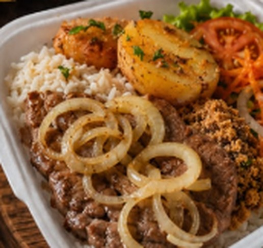
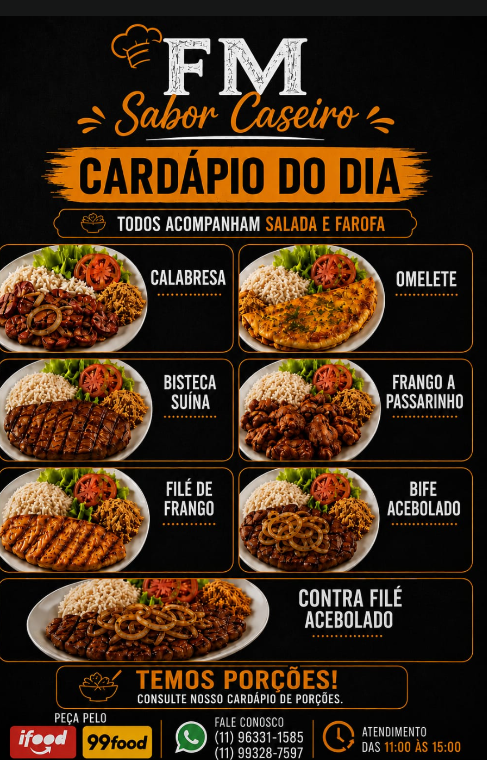
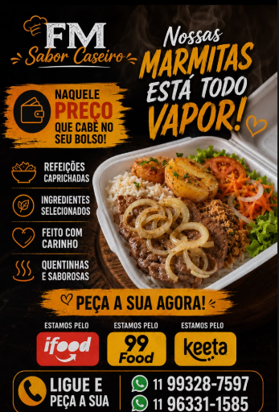

Marmitas caprichadas, feitas com carinho e ingredientes selecionados. Peça pelo site e receba quentinho no seu endereço — atendimento também pelo WhatsApp.

Temos porções! Consulte também o nosso cardápio de porções pelo WhatsApp.


A FM Sabor Caseiro nasceu para levar até você a refeição de casa: comida gostosa, bem temperada e no capricho, com preço que cabe no bolso.
Fazemos delivery em São Paulo todos os dias, das 11h às 15h. Cada pedido é fechado direto pelo WhatsApp, com atendimento rápido do início ao fim.
Fazer meu pedido